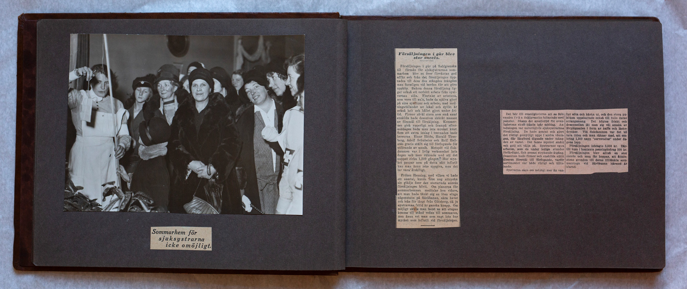
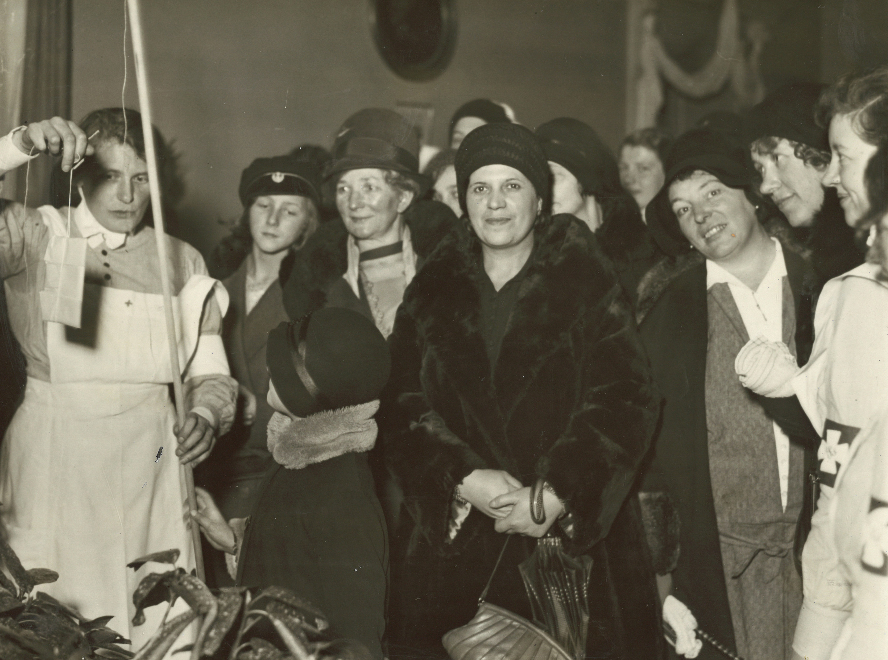
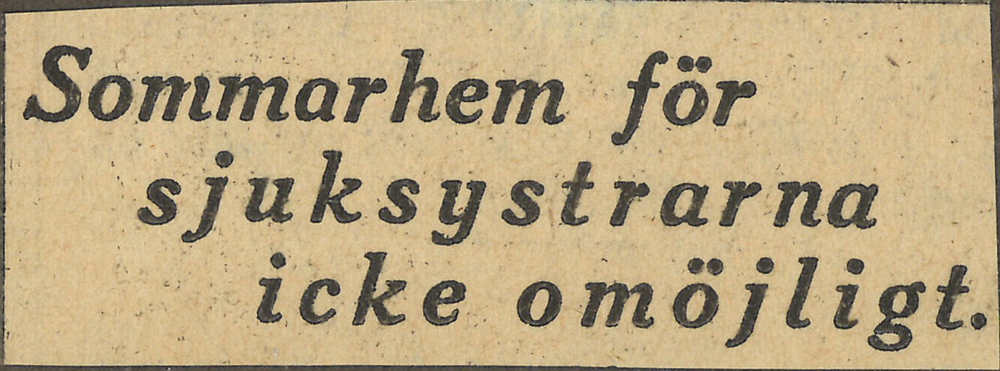
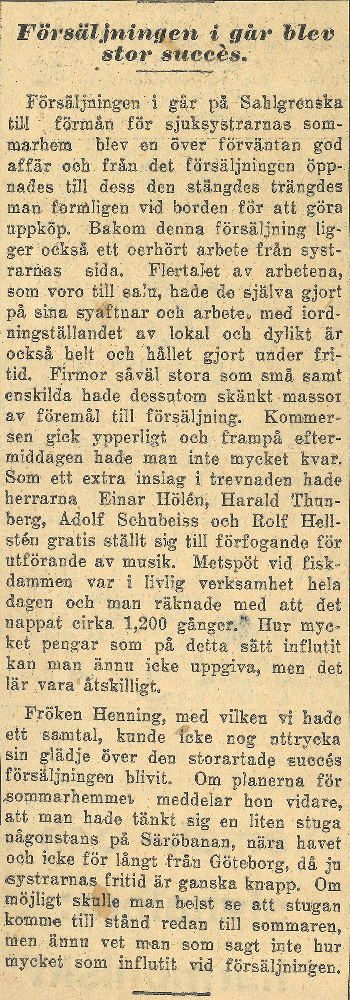
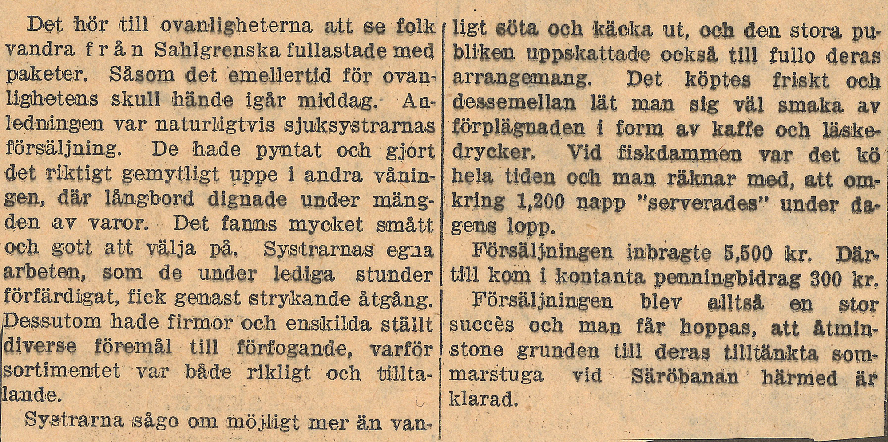

Uppslag 3
{kind=link}




Sommarhem för sjuksystrarna icke omöjligt.

Försäljningen i går blev stor succés. Försäljningen i går på Sahlgrenska till förmån för sjuksystrarnas som marhem blev en över förväntan god affär och från det försäljningen öpp nades till dess den stängdes trängdes man formligen vid borden för att göra uppköp. Bakom denna försäljning lig ger också ett oerhört arbete från syst rarnas sida. Flertalet av de arbetena, som voro till salu, hade de själva gjort på sina syaftnar och arbete, med iord ningställandet av lokal och dylikt är också helt och hållet gjort under fri tid. Firmor såväl stora som små samt enskilda hade dessutom skänkt massor av föremål till försäljning. Kommer sen gick ypperligt och frampå efter middagen hade man inte mycket kvar. Som extra inslag i trevnaden hade herrarna Einar Hölén, Harald Thun berg, Adolf Scubeiss och Rolf Hell stén gratis ställt sig till förfogande för utförande av musik. Metspöt vid fisk dammen var i livlig verksamhet hela dagen och man räknade med att det nappat cirka 1,200 gånger.” Hur myc ket pengar som på detta sätt influtit kan man ännu icke uppgiva, men det lär vara åtskilligt. Fröken Henning, med vilken vi hade ett samtal, kunde icke nog uttrycka sin glädje över den storartade succés försäljningen blivit. Om planerna för sommarhemmet meddelar hon vidare, att man hade tänkt sig en liten stuga någonstans på Säröbanan, nära havet och icke långt från Göteborg, då ju systrarnas fritid är ganska knapp. Om möjligt skulle man helst se att stugan komme till stånd redan till sommaren, men ännu vet man som sagt inte hur mycket som influtit vid försäljningen.

Det hör till ovanligheterna att se folk vandra från Sahlgrenska fullastade med paketer. Såsom det emellertid för ovan lighetens skull hände igår middag. An ledningen var naturligtvis sjuksystrarnas försäljning. De hade pyntat och gjort det riktigt gemytligt uppe i andra vånin gen där långbord dignade under mäng der av varor. Det fanns mycket smått och gott att välja på. Systrarnas egna arbeten, som de under lediga stunder förfärdigat, fick genast strykande åtgång. Dessutom hade firmor och enskilda ställt diverse föremål till förfogande, varför sortimentet var både rikligt och tillta lande. Systrarna sågo om möjligt mer an van ligt söta och käcka ut, och den stora pu bliken uppskattade också till fullo deras arrangemang. Det köptes friskt och dessemellan lät man sig väl smaka av förplägnanden i form av kaffe och läske drycker. Vid fiskdammen var det kö hela tiden och man räknar med, att om kring 1,200 napp ”serverades” under da gens lopp. Försäljningen inbragte 5,500 kr. Där till kom i kontanta penningbidrag 300 kr. Försäljningen blev alltså en stor succés och man får hoppas, att åtmin stone grunden till deras tilltänkta som marstuga vid Säröbanan härmed är klarad.